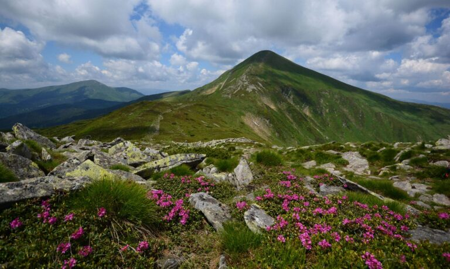
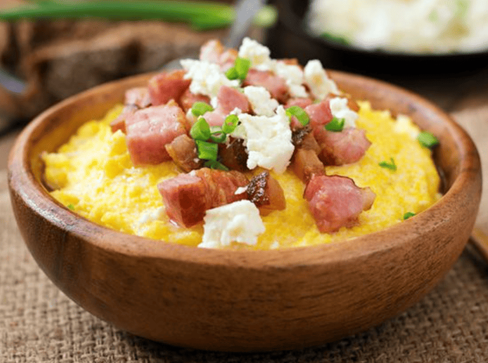
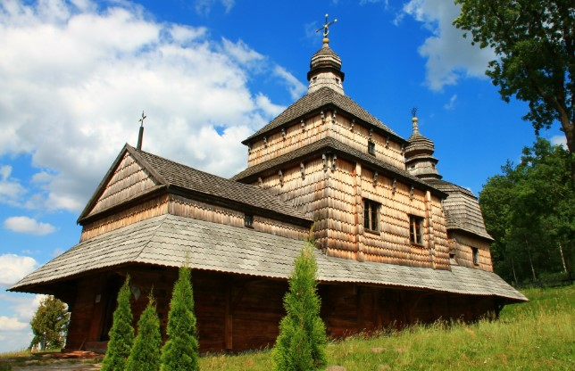
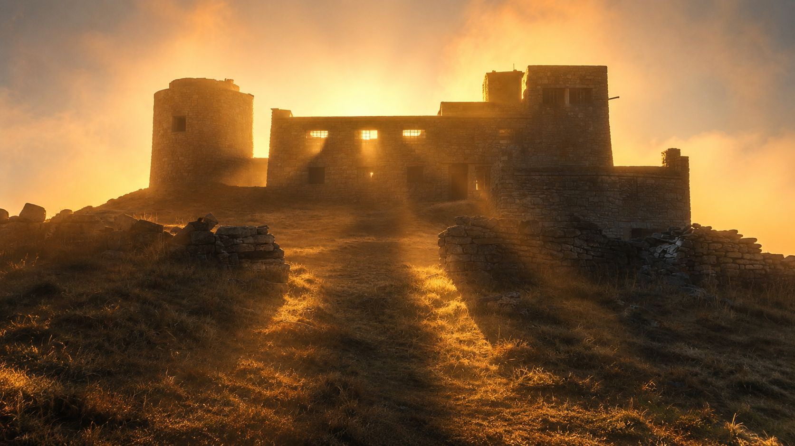

Визначні пам'ятки
Говерла, озеро Синевир і гірські полонини приваблюють мандрівників краєвидами та маршрутами різної складності.

Гірський краєвид Карпат
Кухня та гастрономія
Банош, бринза та грибна юшка знайомлять із ситною й самобутньою кухнею Карпат.

Смаки карпатської кухні
Культура та традиції
Дерев'яні церкви, коломийки та народні ремесла зберігають культурні традиції гуцульського краю.

Дерев'яна церква — частина спадщини Карпат
Особисті історії
Найбільше запам'яталося сходження на світанку: з вершини відкривається безкрає море гір.

Світанок у Карпатах